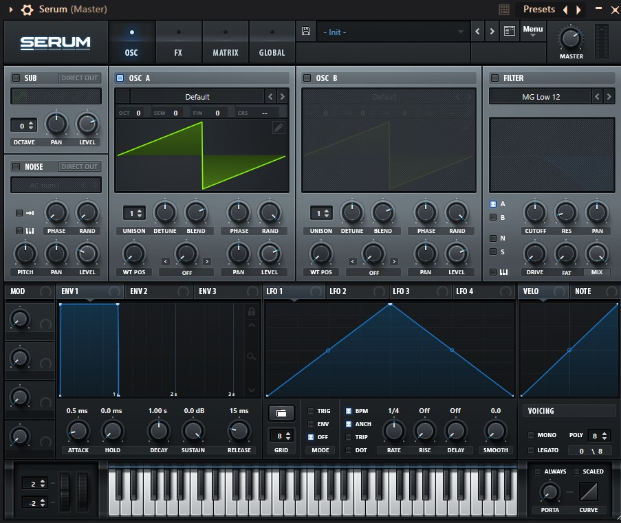
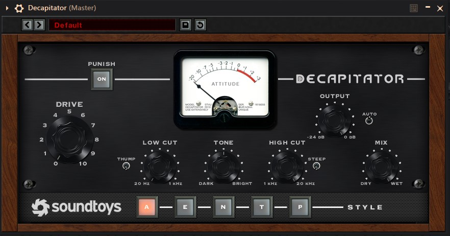
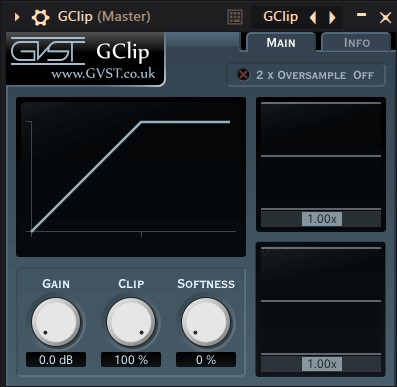

| Назва | Тип | Ціна | Вигляд |
|---|---|---|---|
| Serum | Синтезатор | $189 |  |
| FabFilter Pro-Q3 | Еквалайзер | $169 | |
| Valhalla Vintage Verb | Реверберація | $50 | |
| Valhalla Delay | Дилей | $50 | |
| OTT | Компресор | Free | |
| Decapitator | Сатуратор | $199 |  |
| GClip | Кліппер | Free |  |